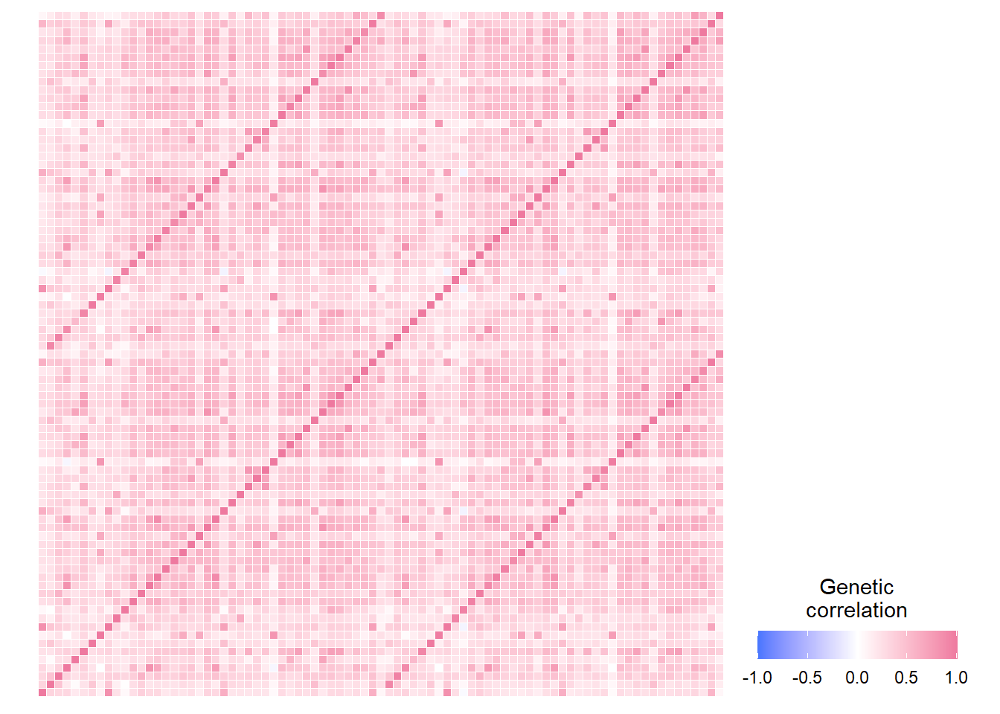
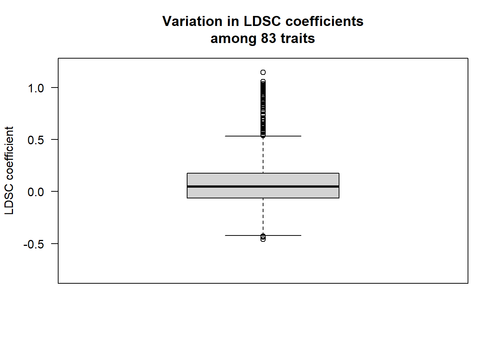
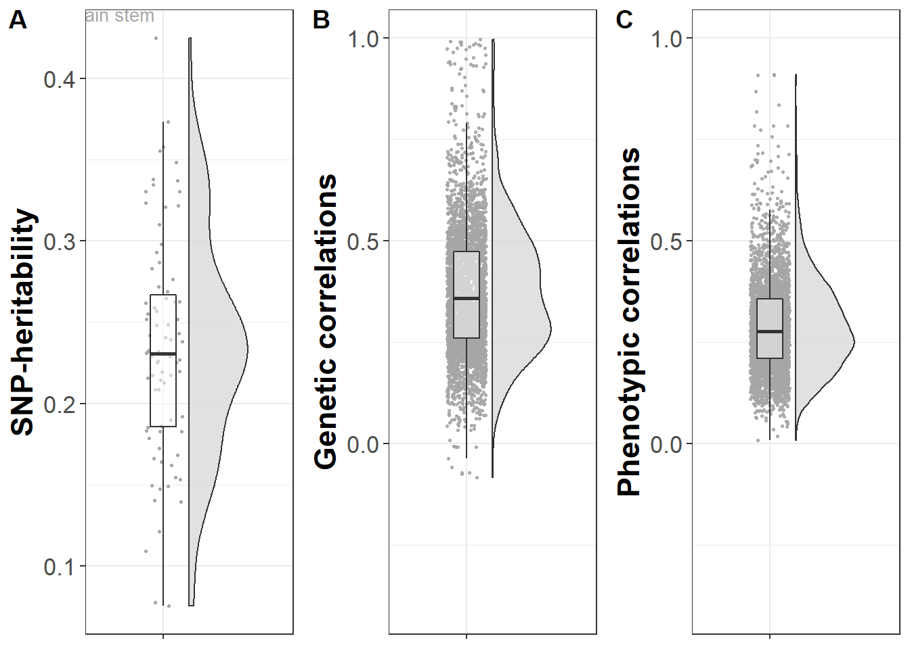

Processing genetic data
\[\\[0.5in]\]
Here we analyse that GWAS summary statistics created as part of this project. The code displayed below performs data visualisation and sanity checks.
\[\\[1in]\]
1. Munge files as expected by Genomic SEM software
### this script will munge the gwas files using GenomicSEM
# load dependencies
library(tidyr)
library(data.table)
library(devtools)
library(GenomicSEM)
library(stringr)
# set wd to where formatted files are saved
setwd("/mnt/lustre/groups/ukbiobank/Edinburgh_Data/usr/anna/PhD/output/regenie/step2/")
hm3<-"/scratch/users/k1894405/genetic_networks/data/w_hm3.noMHC.snplist"
# list gwas files you want to munge
gwas_files<-list.files(pattern="GWAS_22chr_noTBVcontrol_")
print(length(gwas_files))
for (i in gwas_files){
# define file to be munged
files<-i
print(files)
# name the file
trait_name <- str_remove(i, pattern = "GWAS_22chr_noTBVcontrol_")
trait_name <- str_remove(trait_name, pattern = ".txt")
trait.names<-trait_name
print(trait.names)
# munge
munge(files=files,
hm3=hm3,
trait.names=trait.names,
info.filter = 0.9)
}After munging the files have 9 columns, and 1,171,881 rows (SNPs).
2. Calculate LDSC
### after formatting and munging the gwas files, I have manually transferred the files into a folder called "GWAS_munged"
library(stringr)
library(devtools)
library(GenomicSEM)
# set wd to the munged GWAS folder
setwd("/mnt/lustre/groups/ukbiobank/Edinburgh_Data/usr/anna/PhD/output/genetic_networks_project/gwas_munged/")
# specifications for ldsc function
traits<-list.files(pattern=".sumstats.gz")
# double check that 83 files have been read in
if(length(traits) !=83){print("You are not including 83 files");break}
# no sample or population prevalence needed because brain volumes are continuous traits
# specify NA for both
desired_length<-length(traits)
sample.prev<-rep(NA, desired_length)
print(sample.prev)
population.prev<-rep(NA, desired_length)
print(population.prev)
# ld scores and weights previously downloaded (European population)
ld<-"/scratch/users/k1894405/genetic_networks/data/eur_w_ld_chr/"
wld<-"/scratch/users/k1894405/genetic_networks/data/eur_w_ld_chr/"
gwas_munged<-list.files(pattern=".sumstats.gz")
gwas_munged<-str_replace(gwas_munged,pattern=".sumstats.gz",replacement="")
trait.names<-gwas_munged
# double check that trait.names and traits match up
# first build a data set from the vectors, then compare the two vectors
test<-data.frame(trait.names,traits)
print(test)
count<-0
for(i in 1:nrow(test)){
# which trait are we testing
print(substr(test$traits[i], 1, nchar(as.character(test$trait.names[i]))))
print(as.character(test$trait.names[i]))
# break the loop if trait.names and traits don't match
if(as.character(test$trait.names[i]) != substr(test$traits[i], 1, nchar(as.character(test$trait.names[i])))){"Trait names and trait files don't match";break}
count<-count+1
print(paste0("This is the ",count,"st/nd trait iteration"))
}
LDSCoutput_wholebrain<-ldsc(traits=traits,
ld=ld,wld=wld,
trait.names = trait.names,
ldsc.log="/mnt/lustre/groups/ukbiobank/Edinburgh_Data/usr/anna/PhD/output/genetic_networks_project/ldsc/ldsc_wholebrain.log",
sample.prev=sample.prev,
population.prev=population.prev,
stand=T)
## save output for subsequent analyses
save(LDSCoutput_wholebrain, file="/mnt/lustre/groups/ukbiobank/Edinburgh_Data/usr/anna/PhD/output/genetic_networks_project/ldsc/ldsc_wholebrain.RData")3. Plot heatmaps
## this script is displaying the heatmaps of the networks
rm(list=ls())
# load dependencies
library(stringr)
library(reshape2)
library(ggplot2)
# load data and name it according to network
workingwd<-getwd()
temporarywd<-paste0(workingwd,"/data_my_own/ldsc/")
setwd(temporarywd)
networks<-list.files(pattern=".RData")
network_names<-str_replace(networks,pattern=".RData",replacement = "")
for(i in 1:length(networks)){
load(networks[i])
name<-network_names[i]
assign(name,LDSCoutput)
}
## name all columns in S_Stand after brain regions and round S_Stand
for(i in network_names){
output<-get(i)
dimnames(output$S_Stand)[[1]]<-dimnames(output$S)[[2]]
dimnames(output$S_Stand)[[2]]<-dimnames(output$S)[[2]]
name<-i
assign(name,output)
output$S_Stand<-round(output$S_Stand,digits = 2)
name_cor<-paste0("cor_",i)
assign(name_cor,output$S_Stand)
}
# count number of correlation matrices
#length(ls(pattern="cor_"))
# create vector containing names of the correlation matrices
matrices<-ls(pattern="cor_")
## plot the rounded correlation matrices
# get lower triangle of matrix
get_lower_tri<-function(cormatrix){
cormatrix[upper.tri(cormatrix)] <- NA
return(cormatrix)
}
for(i in matrices){
cormatrix<- get(i)
lower_triangle<-get_lower_tri(cormatrix)
lower_triangle<-reshape2::melt(lower_triangle)
#print(i)
#print(lower_triangle)
lower_triangle$value<-ifelse(lower_triangle$value >1,1,lower_triangle$value)
heatmap<-
ggplot(data=lower_triangle, aes(Var1,Var2,fill=value))+
geom_tile(color = "white")+
theme_minimal()+
theme_bw()+
theme(axis.text.x = element_text(angle = 45, vjust = 1,
size = 8, hjust = 1))+
theme(axis.text.y = element_text(vjust = 1,
size = 8, hjust = 1))+
theme(axis.title.x=element_blank(),
axis.title.y = element_blank(),
panel.grid.major = element_blank(),
panel.border = element_blank(),
axis.ticks = element_blank(),
legend.justification = c(1,0),
#legend.position = c(0.45,0.7),
legend.direction = "horizontal")+
scale_fill_gradient2(low="royalblue1",high="palevioletred",mid ="white",
midpoint=0,limit=c(-1,1),na.value="white",
name="Genetic\ncorrelation")+
guides(fill=guide_colorbar(barwidth = 7,barheight = 1,title.position = "top",title.hjust = 0.5))+
coord_fixed()
heatmap<-heatmap+
geom_text(aes(Var1,Var2,label=value),color="black",size=2)
name<-paste0(i,"_heatmap")
assign(name,heatmap)
}Example correlation matrices for three networks inferred through LDSC
Central Executive
Cingulo-opercular
Default Mode
Plot heatmap for genetic correlations across the whole brain
# set working directory
workingd<-getwd()
temporarywd<-paste0(workingd,"/data_my_own/ldsc/")
setwd(temporarywd)
load("whole_brain.RData")
ldscoutput<-LDSCoutput_wholebrain
dimnames(ldscoutput$S_Stand)[[1]]<-dimnames(ldscoutput$S)[[2]]
dimnames(ldscoutput$S_Stand)[[2]]<-dimnames(ldscoutput$S)[[2]]
whole_brain_corr<-reshape2::melt(ldscoutput$S_Stand)
whole_brain_corr$value_corrected<-ifelse(whole_brain_corr$value>1,1,whole_brain_corr$value)
heatmap<-
ggplot(data=whole_brain_corr, aes(Var1,Var2,fill=value_corrected))+
geom_tile(color = "white")+
theme_minimal()+
theme_bw()+
theme(axis.text.x = element_blank())+
theme(axis.text.y = element_blank())+
theme(axis.title.x=element_blank(),
axis.title.y = element_blank(),
panel.grid.major = element_blank(),
panel.border = element_blank(),
axis.ticks = element_blank(),
legend.justification = c(1,0),
#legend.position = c(0.45,0.7),
legend.direction = "horizontal")+
scale_fill_gradient2(low="royalblue1",high="palevioletred2",mid ="white",
midpoint=0,limit=c(-1,1),na.value="white",
name="Genetic\ncorrelation")+
guides(fill=guide_colorbar(barwidth = 7,barheight = 1,title.position = "top",title.hjust = 0.5))+
coord_fixed()
heatmap
The vertical line through the diagnonal indicates the genetic correlation of a brain area with itself, and the vertical lines that run parallel to it indicate the strong genetic correlation with their contralateral counterpart.
Code for heatmaps in Supplementary Materials
### whole brain
tiff("heatmap_whole_brain.tiff", width = 7, height = 6, units = 'in', res=1000)
heatmap
dev.off()
### central executive
tiff("heatmap_central_exec.tiff", width = 6, height = 6, units = 'in', res=1000)
cor_central_exec_heatmap
dev.off()
### cingulo
tiff("heatmap_cingulo.tiff", width = 6, height = 6, units = 'in', res=1000)
cor_cingulo_heatmap
dev.off()
### default mode
tiff("heatmap_default.tiff", width = 7, height = 7, units = 'in', res=1000)
cor_default_mode_heatmap
dev.off()
### hippocampal
tiff("heatmap_hippocampal.tiff", width = 6, height = 6, units = 'in', res=1000)
cor_hippocampal_heatmap
dev.off()
### Multiple demand
tiff("heatmap_multiple.tiff", width = 6, height = 6, units = 'in', res=1000)
cor_multiple_heatmap
dev.off()
### P-FIT
tiff("heatmap_p_fit.tiff", width = 10, height = 10, units = 'in', res=1000)
cor_p_fit_heatmap
dev.off()
### Salience
tiff("heatmap_salience.tiff", width = 6, height = 6, units = 'in', res=1000)
cor_salience_heatmap
dev.off()
### Sensorimotor
tiff("heatmap_sensorimotor.tiff", width = 6, height = 6, units = 'in', res=1000)
cor_sensori_heatmap
dev.off()
### temporo
tiff("heatmap_temporo.tiff", width = 10, height = 10, units = 'in', res=1000)
cor_temporo_heatmap
dev.off()
Sanity checks
Display genetic correlations
library(plyr)
library(TeachingDemos)
source("https://raw.githubusercontent.com/talgalili/R-code-snippets/master/boxplot.with.outlier.label.r")
# load whole brain data
workingd<-getwd()
temporarywd<-paste0(workingd,"/data_my_own/ldsc/")
setwd(temporarywd)
load("whole_brain.RData")
ldscoutput<-LDSCoutput_wholebrain
dimnames(ldscoutput$S_Stand)[[1]]<-dimnames(ldscoutput$S)[[2]]
dimnames(ldscoutput$S_Stand)[[2]]<-dimnames(ldscoutput$S)[[2]]
lower_triangle<-get_lower_tri(ldscoutput$S_Stand)
diag(lower_triangle)<-NA
lower_triangle<-reshape2::melt(lower_triangle)
lower_triangle$jointname<-paste(lower_triangle$Var1,lower_triangle$Var2)
boxplot.with.outlier.label(lower_triangle$value,NA,xaxt="n",yaxt="n",ylab="LDSC coefficient",ylim=c(-0.8,1.2),main="Variation in LDSC coefficients\namong 83 traits",spread_text = F)
axis(side=2,las=2)
# display the lower correlations
#lower_triangle$jointname<-ifelse(lower_triangle$value<=-0.25,lower_triangle$jointname,NA)
display<-lower_triangle[which(!is.na(lower_triangle$value)),c("Var1","Var2","value")]
display$value<-round(display$value, digits=2)
names(display)<-c("Volume 1","Volume 2","Genetic correlation")
library(knitr)
#kable()
library(DT)
datatable(display, rownames=FALSE, filter="top",options= list(pageLength=5,scrollX=T))# work out which correlations are above 1 and below 0
traits_corr_above1<-as.data.frame(whole_brain_corr[which(whole_brain_corr$value >1.0001),])
traits_corr_below0<-whole_brain_corr[which(whole_brain_corr$value<0),]Note that we found correlations slightly above 1 for the following traits:
Right_DC & Left_DC; Right_precentral & Left_precentral; Left_DC & Right_DC; Left_precentral & Right_precentral.
These genetic correlations include 22 negative correlations. As you can see in the table below, nearly all negative correlations involve either the frontal pole or the bankssts, which are both known to be hard to segment, and therefore could index only noise (which is a potential explanation for the negative correlations with more reliably measured brain volumes).
kable(traits_corr_below0[,c("Var1","Var2","value")], digits = 3, row.names = F, col.names = c("Volume 1","Volume 2","Genetic correlation"), caption = "Negative Genetic Correlations")| Volume 1 | Volume 2 | Genetic correlation |
|---|---|---|
| Right_frontal_pole | Brain_stem | -0.037 |
| Left_cuneus | Left_bankssts | -0.008 |
| Left_pericalcarine | Left_bankssts | -0.060 |
| Right_cuneus | Left_bankssts | -0.010 |
| Right_pericalcarine | Left_bankssts | -0.008 |
| Left_bankssts | Left_cuneus | -0.008 |
| Right_frontal_pole | Left_DC | -0.075 |
| Right_frontal_pole | Left_pallidum | -0.083 |
| Left_bankssts | Left_pericalcarine | -0.060 |
| Right_bankssts | Left_pericalcarine | -0.008 |
| Right_caudal_anterior_cingulate | Left_pericalcarine | -0.009 |
| Left_pericalcarine | Right_bankssts | -0.008 |
| Left_pericalcarine | Right_caudal_anterior_cingulate | -0.009 |
| Left_bankssts | Right_cuneus | -0.010 |
| Right_frontal_pole | Right_DC | -0.073 |
| Brain_stem | Right_frontal_pole | -0.037 |
| Left_DC | Right_frontal_pole | -0.075 |
| Left_pallidum | Right_frontal_pole | -0.083 |
| Right_DC | Right_frontal_pole | -0.073 |
| Right_pallidum | Right_frontal_pole | -0.072 |
| Right_frontal_pole | Right_pallidum | -0.072 |
| Left_bankssts | Right_pericalcarine | -0.008 |
Data display in manuscript
Boxplots displaying SNP-heritabilites and genetic correlations
library(readr)
library(tidyr)
library(ggplot2)
library(Hmisc)
library(plyr)
library(RColorBrewer)
library(reshape2)
library(PupillometryR)
library(cowplot)
# plotted with explanation on : https://micahallen.org/2018/03/15/introducing-raincloud-plots/
#tiff("boxplots.tiff", width = 9, height = 6, units = 'in', res=1000)
##########################################
## Plot SNP-heriability
#########################################
# data to be plotted: heritability estimates
workingd<-getwd()
temporarywd<-paste0(workingd,"/data_my_own/ldsc/")
setwd(temporarywd)
heritability<-read.table("heritability_brain_volumes_14052021.txt",header=T)
heritability$name<-rep("SNP-heritability",83)
heritability$outlier<-ifelse(heritability$p2=="Brain_stem", "Brain stem",NA)
# plot SNP-heritability
plot_heritability<-
ggplot(data=heritability,aes(x=name,y=h2_obs))+
geom_flat_violin(position = position_nudge(x = .2, y = 0), alpha = .8, fill="gray85",alpha=0.1) +
geom_point(aes(y = h2_obs), position = position_jitter(width = .15), size = .5, alpha = 1,colour="gray65")+
geom_boxplot(width = .2, guides = FALSE, outlier.shape = NA, alpha = 0.5)+
geom_text(aes(label = outlier), na.rm = TRUE, hjust = 1.1, vjust=-1.2, colour="gray65",size=3.5)+
expand_limits(x=2)+
theme_bw() +
theme(text = element_text(size=12),
axis.text.x = element_blank(),
axis.text.y = element_text(size=13),
axis.title.y = element_text(face="bold", colour='black', size=17),
axis.title.x = element_blank())+
ylab("SNP-heritability")
##################################################
# Plot genetic correlations
#################################################
temporarywd<-paste0(workingd,"/data_my_own/ldsc/")
setwd(temporarywd)
load("whole_brain.RData")
ldscoutput<-LDSCoutput_wholebrain
dimnames(ldscoutput$S_Stand)[[1]]<-dimnames(ldscoutput$S)[[2]]
dimnames(ldscoutput$S_Stand)[[2]]<-dimnames(ldscoutput$S)[[2]]
get_lower_tri<-function(cormatrix){
cormatrix[upper.tri(cormatrix)] <- NA
return(cormatrix)
}
lower_triangle<-get_lower_tri(ldscoutput$S_Stand)
# remove correlations with oneself
diag(lower_triangle)<-NA
#melt correlation matrix
lower_triangle<-reshape2::melt(lower_triangle)
# remove correlations with itself
lower_triangle$value<-ifelse(lower_triangle$Var1 == lower_triangle$Var2,NA,lower_triangle$value)
lower_triangle$jointname<-paste(lower_triangle$Var1,lower_triangle$Var2)
lower_triangle$name<-rep("genetic corr",nrow(lower_triangle))
# we only keep lower_triangle values that are not missing
lower_triangle<-lower_triangle[which(!is.na(lower_triangle$value)),]
## plot genetic correlations
plot_genetic_corr<-
ggplot(data=lower_triangle,aes(x=name,y=value))+
geom_flat_violin(position = position_nudge(x = .2, y = 0), alpha = .8,fill="gray85",alpha=0.6) +
geom_point(aes(y = value), position = position_jitter(width = .15), size = .5, alpha = 0.9,colour="gray65") +
geom_boxplot(width = .2, guides = FALSE, outlier.shape = NA, alpha = 0.5)+
expand_limits(x=2)+
theme_bw()+
theme(text = element_text(size=12),
axis.text.x = element_blank(),
axis.text.y = element_text(size=13),
axis.title.y = element_text(face="bold", colour='black', size=17),
axis.title.x = element_blank())+
ylab("Genetic correlations")+
ylim(-0.4,1)
#############################################################################################
# make same plot for phenotypic correlations
# code for how we obtain the cor_matrix on the Edinburgh server can be found in this document under "Pre-processing: Phenotypic data"
temporarywd_pheno<-paste0(workingd,"/data_my_own/Pheno_preparation/")
setwd(temporarywd_pheno)
load("pheno_decomposition.RData")
lower_triangle_pheno<-get_lower_tri(cor_matrix)
# remove correlations with oneself
diag(lower_triangle_pheno)<-NA
#melt
lower_triangle_pheno<-reshape2::melt(lower_triangle_pheno)
lower_triangle_pheno$value<-ifelse(lower_triangle_pheno$Var1 == lower_triangle_pheno$Var2,NA,lower_triangle_pheno$value)
# we only keep non-missing values
lower_triangle_pheno<-lower_triangle_pheno[which(!is.na(lower_triangle_pheno$value)),]
# add variable to plot against
lower_triangle_pheno$name<-rep("phenotypic corr",nrow(lower_triangle_pheno))
## plot phenotypic correlations
plot_phenotypic_corr<-
ggplot(data=lower_triangle_pheno,aes(x=name,y=value))+
geom_flat_violin(position = position_nudge(x = .2, y = 0), alpha = .8,fill="gray85",alpha=0.6) +
geom_point(aes(y = value), position = position_jitter(width = .15), size = .5, alpha = 0.9,colour="gray65") +
geom_boxplot(width = .2, guides = FALSE, outlier.shape = NA, alpha = 0.5)+
expand_limits(x=2)+
theme_bw()+
theme(text = element_text(size=12),
axis.text.x = element_blank(),
axis.text.y = element_text(size=13),
axis.title.y = element_text(face="bold", colour='black', size=17),
axis.title.x = element_blank())+
ylab("Phenotypic correlations")+
ylim(-0.4,1)
#############################################################################################
# display all three plots together
plot_grid(plot_heritability,plot_genetic_corr,plot_phenotypic_corr,ncol=3,nrow=1,labels = c("A","B","C"))
#setwd(workingd)
#dev.off()
By Anna Elisabeth Fürtjes
anna.furtjes@kcl.ac.uk